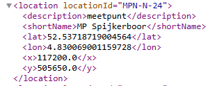
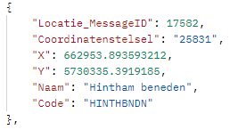

Belastingen inladen
Om inzicht te krijgen in de veiligheid van waterkeringen is het van belang om de belastingen op de waterkeringen in kaart te brengen. Dit kunnen waterstanden op het buitenwater (zee, rivieren of meren) zijn, maar ook grondwaterstanden.
In dit voorbeeld wordt het inlezen van waterstanden uit verschillende bronsystemen getoond: - RWS Waterinfo - FEWS - (Noos) Matroos - RWS WaterWebServices
Hierbij wordt gebruik gemaakt van csv bestanden voor uitwisselen van data.
Benodigde generieke Python packages
from pathlib import PathDefinitie configuratie: CSV bestanden
GlobalVariables:
rootdir: "data_demo"
moments: [-24,0,24,48]
LoadsWaterinfo:
parameters: ["waterhoogte"]
MISSING_VALUE: 999
LoadsFews:
host: "https://fews.hhnk.nl"
port: 443
region: "fewspiservice"
version: "1.25"
filter: "HHNK_WEB"
parameters: ["WATHTE [m][NAP][OW]", "WINDRTG [deg]"]
aquo_equivalent: ["WATHTE","WINDRTG"]
MISSING_VALUE: 999
LoadsMatroos:
website: "vitaal"
model: "dcsm6_kf"
parameters: ["WATHTE"]
MISSING_VALUE: 999
LoadsWaterwebservicesRWS:
parameters: ["WATHTE"]
MISSING_VALUE: 999
DataAdapter:
default_options:
csv_source:
sep: ";"
csv:
sep: ","
BelastingLocaties_WaterInfo:
type: csv_source
filter: "WaterInfo"
path: "locaties.csv"
Waterstanden_WaterInfo:
type: csv
path: "waterstanden_waterinfo.csv"
BelastingLocaties_FEWS:
type: csv_source
filter: "FEWS"
path: "locaties.csv"
Waterstanden_FEWS:
type: csv
path: "waterstanden_fews.csv"
BelastingLocaties_Matroos:
type: csv_source
filter: "NOOS Matroos"
path: "locaties.csv"
Waterstanden_Matroos:
type: csv
path: "waterstanden_matroos.csv"
BelastingLocaties_Waterwebservices_RWS:
type: csv_source
filter: "RWS Waterwebservices"
path: "locaties.csv"
Waterstanden_Waterwebservices_RWS:
type: csv
path: "waterstanden_waterwebservices_rws.csv"Lees configuratie in en maak dictionary base.Config aan
from toolbox_continu_inzicht import Config
path = Path.cwd() / "data_sets" / "2.belastingen_inladen"
yaml_config_file = "demo_sprint2-I.yaml"
config_path = path / yaml_config_file
config = Config(config_path=config_path)
config.lees_config()Geef config mee aan base.Adapter
from toolbox_continu_inzicht import DataAdapter
data_adapter = DataAdapter(config=config)
print(f"Folder met data: {data_adapter.config.config_path}")
print(f"Globale variabelen: {data_adapter.config.global_variables}")
for data in data_adapter.config.data_adapters:
print(f"Data apdater: {data}")Folder met data: D:-continu-inzicht-continu-inzicht_inzicht_sets\2.belastingen_inladen_sprint2-I.yaml Globale variabelen: {‘rootdir’: ‘data_sets/2.belastingen_inladen’, ‘moments’: [-24, 0, 24, 48], ‘aquo_alias’: {‘WATHTE [m][NAP][OW]’: ‘WATHTE’}, ‘LoadsWaterinfo’: {‘parameters’: [‘waterhoogte’], ‘MISSING_VALUE’: 999}, ‘LoadsFews’: {‘host’: ‘https://fews.hhnk.nl’, ‘port’: 443, ‘region’: ‘fewspiservice’, ‘version’: ‘1.25’, ‘filter’: ‘HHNK_WEB’, ‘parameters’: [‘WATHTE [m][NAP][OW]’], ‘MISSING_VALUE’: 999}, ‘LoadsMatroos’: {‘website’: ‘noos’, ‘model’: ‘dcsm6_kf’, ‘parameters’: [‘WATHTE’], ‘MISSING_VALUE’: 999}, ‘LoadsWaterwebservicesRWS’: {‘parameters’: [‘WATHTE’], ‘MISSING_VALUE’: 999}, ‘calc_time’: datetime.datetime(2026, 2, 3, 10, 0, tzinfo=datetime.timezone.utc)} Data apdater: default_options Data apdater: BelastingLocaties_WaterInfo Data apdater: Waterstanden_WaterInfo Data apdater: BelastingLocaties_FEWS Data apdater: Waterstanden_FEWS Data apdater: BelastingLocaties_Matroos Data apdater: Waterstanden_Matroos Data apdater: BelastingLocaties_Waterwebservices_RWS Data apdater: Waterstanden_Waterwebservices_RWS
Invoerbestand (CSV) met data van belastinglocaties
De functie verwacht de volgende verplichte velden, dit wordt ook wel een schema genoemd in de code: - measurement_location_id: int64 - measurement_location_code: object (string) - measurement_location_description: object (string)
Het csv bestand ziet er als volgt uit:
measurement_location_id;measurement_location_code;measurement_location_description;source;tide\
1;Pannerdense-kop(PANN);Pannerdense kop;WaterInfo;false\
2;MPN-N-24;Meetpunt Spijkerboor;FEWS;false\
3;hoekvanholland;Hoek van Holland;NOOS Matroos;true\
4;3450;rosmalen.hinthamsluis.boven;RWS Waterwebservices;falseLaad module (functie) LoadsWaterinfo voor inlezen belastingen uit RWS Waterinfo
from toolbox_continu_inzicht.loads import LoadsWaterinfo
waterinfo = LoadsWaterinfo(data_adapter=data_adapter)Run module (functie) LoadsWaterinfo voor inlezen waterstanden uit Waterinfo
Zoek op basis van een measurement_location_code die in RWS WaterInfo overeenkomt met ‘locationCodes’
ds = waterinfo.run(input="BelastingLocaties_WaterInfo", output="Waterstanden_WaterInfo")measuringlocations = waterinfo.df_in
measuringlocations| measurement_location_id | measurement_location_code | measurement_location_description | source | tide | |
|---|---|---|---|---|---|
| 0 | 1 | Pannerdense-kop(PANN) | Pannerdense kop | WaterInfo | False |
waterlevels = waterinfo.df_out
waterlevels| measurement_location_id | measurement_location_code | measurement_location_description | parameter_id | parameter_code | parameter_description | unit | date_time | value | value_type | |
|---|---|---|---|---|---|---|---|---|---|---|
| 149 | 1 | Pannerdense-kop(PANN) | Pannerdense kop | 4724 | WATHTE | Waterhoogte Oppervlaktewater t.o.v. Normaal Am... | cm | 2026-02-02 10:00:00+00:00 | 859.0 | meting |
| 150 | 1 | Pannerdense-kop(PANN) | Pannerdense kop | 4724 | WATHTE | Waterhoogte Oppervlaktewater t.o.v. Normaal Am... | cm | 2026-02-02 10:10:00+00:00 | 857.0 | meting |
| 151 | 1 | Pannerdense-kop(PANN) | Pannerdense kop | 4724 | WATHTE | Waterhoogte Oppervlaktewater t.o.v. Normaal Am... | cm | 2026-02-02 10:20:00+00:00 | 857.0 | meting |
| 152 | 1 | Pannerdense-kop(PANN) | Pannerdense kop | 4724 | WATHTE | Waterhoogte Oppervlaktewater t.o.v. Normaal Am... | cm | 2026-02-02 10:30:00+00:00 | 857.0 | meting |
| 153 | 1 | Pannerdense-kop(PANN) | Pannerdense kop | 4724 | WATHTE | Waterhoogte Oppervlaktewater t.o.v. Normaal Am... | cm | 2026-02-02 10:40:00+00:00 | 857.0 | meting |
| ... | ... | ... | ... | ... | ... | ... | ... | ... | ... | ... |
| 571 | 1 | Pannerdense-kop(PANN) | Pannerdense kop | 4724 | WATHTE | Waterhoogte verwacht Oppervlaktewater t.o.v. N... | cm | 2026-02-05 05:20:00+00:00 | 837.0 | verwachting |
| 572 | 1 | Pannerdense-kop(PANN) | Pannerdense kop | 4724 | WATHTE | Waterhoogte verwacht Oppervlaktewater t.o.v. N... | cm | 2026-02-05 05:30:00+00:00 | 837.0 | verwachting |
| 573 | 1 | Pannerdense-kop(PANN) | Pannerdense kop | 4724 | WATHTE | Waterhoogte verwacht Oppervlaktewater t.o.v. N... | cm | 2026-02-05 05:40:00+00:00 | 837.0 | verwachting |
| 574 | 1 | Pannerdense-kop(PANN) | Pannerdense kop | 4724 | WATHTE | Waterhoogte verwacht Oppervlaktewater t.o.v. N... | cm | 2026-02-05 05:50:00+00:00 | 837.0 | verwachting |
| 575 | 1 | Pannerdense-kop(PANN) | Pannerdense kop | 4724 | WATHTE | Waterhoogte verwacht Oppervlaktewater t.o.v. N... | cm | 2026-02-05 06:00:00+00:00 | 837.0 | verwachting |
427 rows × 10 columns
Laad en run module (functie) LoadsFEWS voor inlezen belastingen uit FEWS
Zoek op basis van een measurement_location_code die in FEWS overeenkomt met ‘locationId’

FEWS is niet extern bereikbaar en kan dus niet in de documentatie worden getoond
# from toolbox_continu_inzicht.loads import LoadsFews
# fews = LoadsFews(data_adapter=data_adapter)
# ds = fews.run(input="BelastingLocaties_FEWS", output="Waterstanden_FEWS")# measuringlocations = fews.df_in
# measuringlocations# waterlevels = fews.df_out
# waterlevelsLaad en run module (functie) LoadsMatroos voor inlezen belastingen uit Matroos
Zoek op basis van een measurement_location_code die in (NOOS) Matroos overeenkomt met ‘Location’ -> loc_id!
from toolbox_continu_inzicht.loads import LoadsMatroos
matroos = LoadsMatroos(data_adapter=data_adapter)
ds = matroos.run(input="BelastingLocaties_Matroos", output="Waterstanden_Matroos")measuringlocations = matroos.df_in
measuringlocations| measurement_location_id | measurement_location_code | measurement_location_description | source | tide | |
|---|---|---|---|---|---|
| 2 | 3 | Hoek van Holland | Hoek van Holland | NOOS Matroos | True |
waterlevels = matroos.df_out
waterlevelsLaad en run module (functie) LoadsWaterwebservicesRWS voor inlezen belastingen uit RWS Waterwebservices
Zoek op basis van een measurement_location_code die in RWS WaterWebservices overeenkomt met Locatie_MessageID!

from toolbox_continu_inzicht.loads import LoadsWaterwebservicesRWS
waterwebservices_rws = LoadsWaterwebservicesRWS(data_adapter=data_adapter)
ds = waterwebservices_rws.run(
input="BelastingLocaties_Waterwebservices_RWS",
output="Waterstanden_Waterwebservices_RWS",
)measuringlocations = waterwebservices_rws.df_in
measuringlocations| measurement_location_id | measurement_location_description | source | tide | measurement_location_code_name | |
|---|---|---|---|---|---|
| measurement_location_code | |||||
| 3450 | 4 | rosmalen.hinthamsluis.boven | RWS Waterwebservices | False | rosmalen.hinthamsluis.boven |
waterlevels = waterwebservices_rws.df_out
waterlevels| measurement_location_id | measurement_location_code | measurement_location_description | parameter_id | parameter_code | date_time | unit | value | value_type | |
|---|---|---|---|---|---|---|---|---|---|
| 0 | 4 | rosmalen.hinthamsluis.boven | Rosmalen Hinthamsluis boven | 4724 | WATHTE | 2026-02-02 11:00:00+01:00 | cm | 469.0 | meting |
| 1 | 4 | rosmalen.hinthamsluis.boven | Rosmalen Hinthamsluis boven | 4724 | WATHTE | 2026-02-02 11:10:00+01:00 | cm | 467.0 | meting |
| 2 | 4 | rosmalen.hinthamsluis.boven | Rosmalen Hinthamsluis boven | 4724 | WATHTE | 2026-02-02 11:20:00+01:00 | cm | 467.0 | meting |
| 3 | 4 | rosmalen.hinthamsluis.boven | Rosmalen Hinthamsluis boven | 4724 | WATHTE | 2026-02-02 11:30:00+01:00 | cm | 470.0 | meting |
| 4 | 4 | rosmalen.hinthamsluis.boven | Rosmalen Hinthamsluis boven | 4724 | WATHTE | 2026-02-02 11:40:00+01:00 | cm | 471.0 | meting |
| ... | ... | ... | ... | ... | ... | ... | ... | ... | ... |
| 139 | 4 | rosmalen.hinthamsluis.boven | Rosmalen Hinthamsluis boven | 4724 | WATHTE | 2026-02-03 10:10:00+01:00 | cm | 471.0 | meting |
| 140 | 4 | rosmalen.hinthamsluis.boven | Rosmalen Hinthamsluis boven | 4724 | WATHTE | 2026-02-03 10:20:00+01:00 | cm | 472.0 | meting |
| 141 | 4 | rosmalen.hinthamsluis.boven | Rosmalen Hinthamsluis boven | 4724 | WATHTE | 2026-02-03 10:30:00+01:00 | cm | 471.0 | meting |
| 142 | 4 | rosmalen.hinthamsluis.boven | Rosmalen Hinthamsluis boven | 4724 | WATHTE | 2026-02-03 10:40:00+01:00 | cm | 469.0 | meting |
| 143 | 4 | rosmalen.hinthamsluis.boven | Rosmalen Hinthamsluis boven | 4724 | WATHTE | 2026-02-03 10:50:00+01:00 | cm | 470.0 | meting |
144 rows × 9 columns